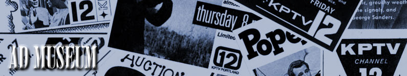

|
|
 KPTV's most effective way of attracting viewers, aside from on-air promotion, was through print advertising in local newspapers and magazines. From the earliest days of KPTV broadcasts, the station used print ads as a way to inform viewers of upcoming programs, and lure them away from other stations -- even before other local stations signed-on. Here, is a look back at fifty years of print advertising.
This page last updated on August 16, 2025 |


|
Yesterday's KPTV Website design and content ©2003-2025 by Ron Dunevant, LLC unless otherwise noted. |